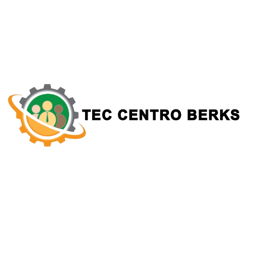

Search the full guide set
Use the search bar or choose an area to browse its source passages.
Loading the guides…
Sources included
Loading source details…

Find answers in Tec Centro Berks policies, procedures, staff workflows, training materials, and published program information.
Ask in plain language. AskTec gives a direct answer when the sources support one and links you to the source sections.
Try a common question
Browse by area
Use the search bar or choose an area to browse its source passages.